Procesamiento del Lenguaje Natural y Reconocimiento del Habla · Clase 02
1 - Introducción al NLP - Parte 1 - Word2Vec
Contenido convertido sin ejecutar Python. Se conservan las salidas guardadas; las figuras matemáticas sustituidas y los gráficos de PE están identificados en el registro de revisión.
En esta página
Referencias1.1. Introducción: Aprendizaje de Representaciones de Texto1.2. Word Embedding (word2vec)1.2.1. Representación del One-Hot Encoding1.2.2. Evaluación del "One-Hot Encoding"1.3. ¿Qué es Word2Vec?1.3.1. Mecanismo Base: La Ventana Deslizante1.3.2. Skip-Gram (Del Centro Hacia el Contexto)1.3.3. CBOW (Continuous Bag of Words)1.1. Introducción: Aprendizaje de Representaciones de Texto
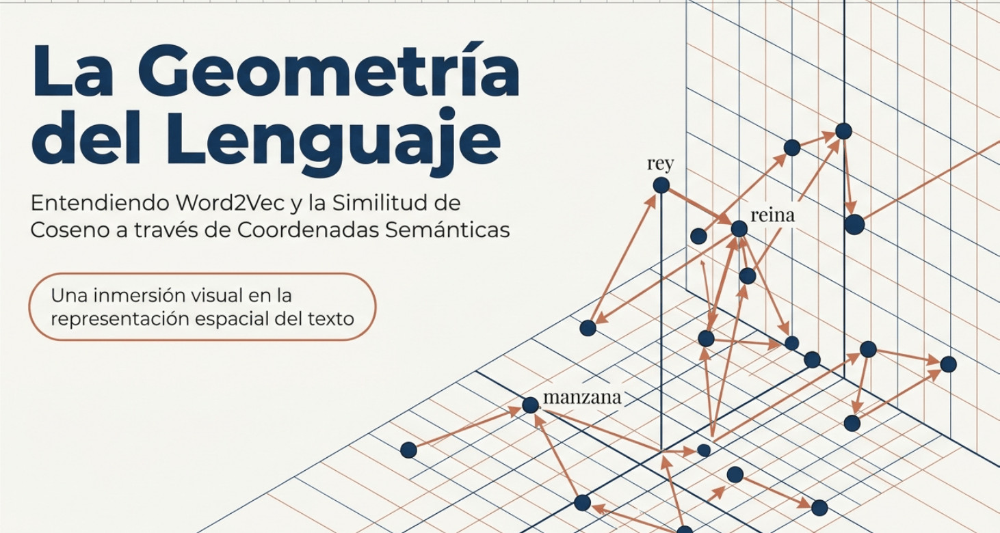
La comunicación es una necesidad intrínseca de la condición humana. En la era actual, esta necesidad ha derivado en la generación diaria de volúmenes masivos de texto —desde redes sociales y reseñas de productos hasta artículos científicos— . Para las organizaciones modernas, dotar a las computadoras de la capacidad de comprender este lenguaje no es un lujo técnico, sino una prioridad estratégica para asistir en la toma de decisiones críticas basadas en conocimiento humano.
El Procesamiento de Lenguaje Natural (NLP) estudia precisamente esta interacción, donde las representaciones de texto (embeddings) constituyen el primer paso fundamental para una comprensión profunda al transformar tokens en vectores numéricos procesables.
La transformación radical de este campo ha sido impulsada por el aprendizaje auto-supervisado (self-supervised learning):
Este paradigma ha permitido que los modelos aprendan directamente de corpus masivos al predecir partes ocultas del texto a partir de su entorno, eliminando la dependencia de etiquetas manuales costosas y lentas.
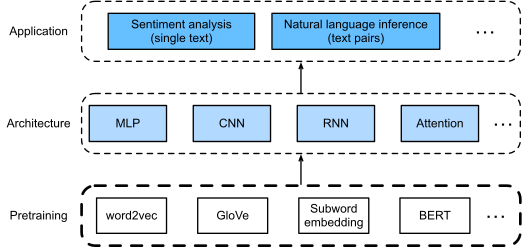
Fig. 1.1 Las representaciones de texto preentrenadas pueden incorporarse a diversas arquitecturas de aprendizaje profundo para diferentes aplicaciones posteriores de procesamiento del lenguaje natural. [2]
1.2. Word Embedding (word2vec)
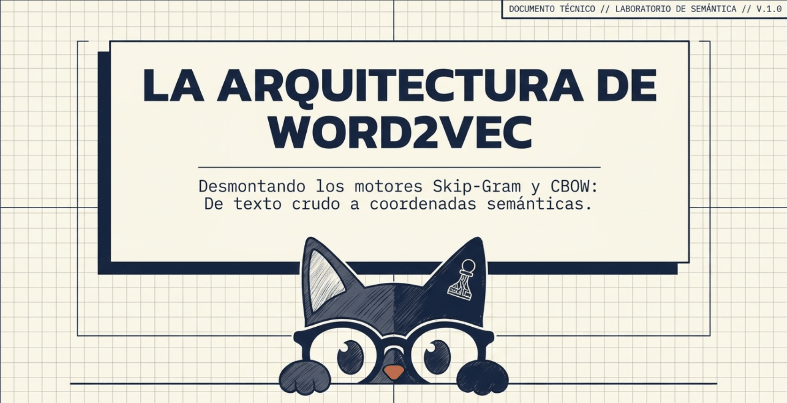
La evolución del NLP ha estado definida por la transición crítica de representaciones discretas y ortogonales hacia estructuras vectoriales densas, denominadas word embeddings.
En este paradigma, las palabras se proyectan a un espacio continuo donde la proximidad geométrica refleja afinidad semántica. La relevancia de estas arquitecturas reside en que la estructura de los vectores de características permite que los sistemas modernos traten el significado no como un símbolo atómico, sino como una distribución de pesos optimizable mediante métodos de aprendizaje profundo.
1.2.1. Representación del One-Hot Encoding
Sea el tamaño del vocabulario y el índice de una palabra. Su vector one-hot tiene componentes , con el mismo rango de índices para .
El vector identifica el token; las relaciones entre palabras pueden aprenderse después mediante una matriz de embeddings: . No hace falta materializar el vector one-hot para consultar la fila correspondiente de .
Referencia: D2L · Word embedding
1.2.1.1. Visualización
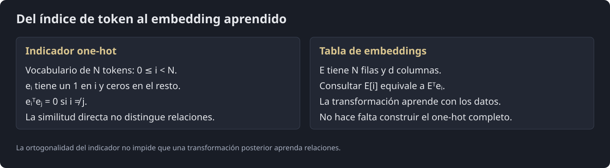
Diagrama visual · Una consulta selecciona una fila del embedding
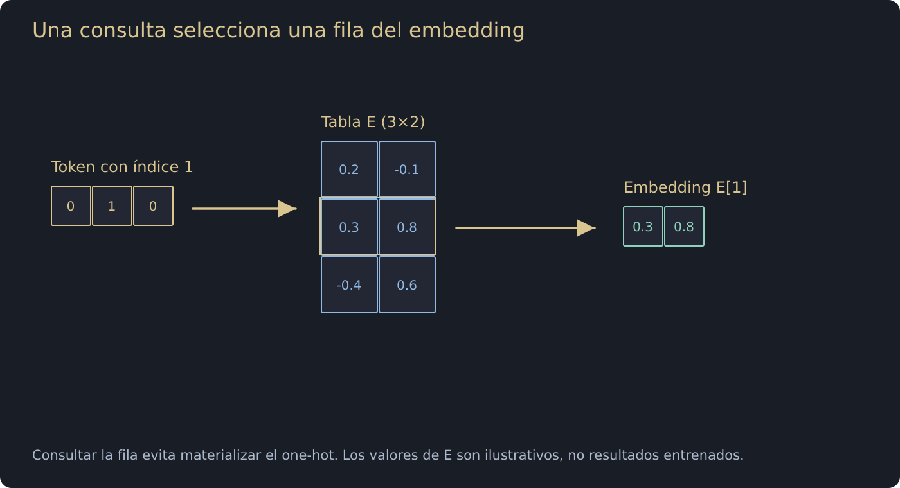
Cómo leer esta imagen
-
El token elegido tiene índice 1 en un vocabulario de tres entradas. Su indicador es [0,1,0].
-
La tabla E tiene una fila por token y dos coordenadas por embedding. La selección devuelve E[1]=[0.3,0.8] en este ejemplo sintético.
-
Multiplicar Eᵀ por el one-hot da el mismo resultado que consultar la fila directamente. La tabla se aprende; no hace falta construir el indicador completo en una implementación habitual.
Fig. 1.2. Representación matemática de la codificación One-Hot y su consecuencia geométricas.
1.2.2. Evaluación del "One-Hot Encoding"
Dos vectores one-hot de palabras distintas son ortogonales: y su distancia euclídea es . Por eso la similitud directa entre esos indicadores no distingue relaciones lingüísticas. Esto no impide que una red que los recibe aprenda representaciones útiles: una tabla de embeddings realiza precisamente esa transformación.
Referencia: D2L · Word embedding
Diagrama visual · Una consulta selecciona una fila del embedding
Cómo leer esta imagen
-
El token elegido tiene índice 1 en un vocabulario de tres entradas. Su indicador es [0,1,0].
-
La tabla E tiene una fila por token y dos coordenadas por embedding. La selección devuelve E[1]=[0.3,0.8] en este ejemplo sintético.
-
Multiplicar Eᵀ por el one-hot da el mismo resultado que consultar la fila directamente. La tabla se aprende; no hace falta construir el indicador completo en una implementación habitual.
Fig. 1.3. La falla geométrica del One-Hot Encoding.
La ortogonalidad pertenece a la codificación one-hot. No afirma que las palabras sean lingüísticamente independientes ni limita lo que puede aprender una transformación posterior.
Referencia: D2L · Word embedding
1.2.2.1. La Similitud Coseno
Para vectores no nulos, la similitud coseno es . Compara direcciones y es invariante al escalado positivo de cada vector. Su interpretación semántica depende de los embeddings y de la tarea; no mide directamente el significado.
Referencia: D2L · Word embedding
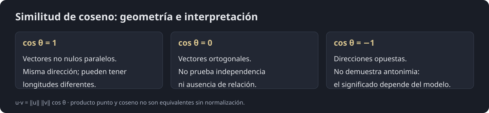
Diagrama visual · Ángulo y longitud son propiedades distintas
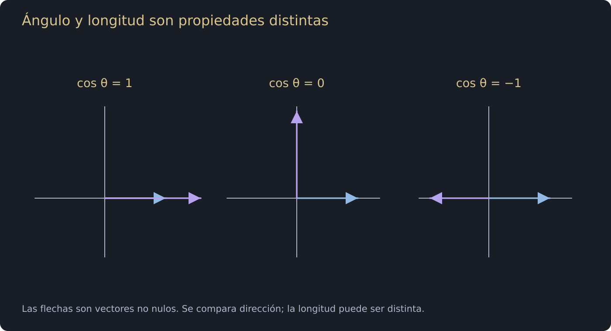
Cómo leer esta imagen
-
En el primer plano, las flechas tienen la misma dirección y longitudes distintas: su coseno es uno.
-
En el segundo forman un ángulo recto y el coseno es cero. En el tercero apuntan en direcciones opuestas y el coseno es menos uno.
-
Estas son relaciones geométricas entre vectores no nulos. Para leerlas como relaciones lingüísticas hace falta un modelo y una evaluación; coseno negativo no significa automáticamente antonimia.
Fig. 1.4. La necesidad del uso de la Similitud de Coseno.
1.2.2.2. El espectro de la similitud de coseno
Para vectores no nulos, el coseno pertenece a :
- : misma dirección, aunque las longitudes pueden ser distintas.
- : direcciones ortogonales.
- : direcciones opuestas.
Estas son propiedades geométricas. En embeddings, la interpretación depende del modelo y del corpus: un coseno negativo no demuestra antonimia y un coseno cero no demuestra ausencia de relación lingüística. Los antónimos pueden aparecer cerca porque comparten contextos. La similitud tampoco garantiza sinonimia.
Diagrama visual · Ángulo y longitud son propiedades distintas
Cómo leer esta imagen
-
En el primer plano, las flechas tienen la misma dirección y longitudes distintas: su coseno es uno.
-
En el segundo forman un ángulo recto y el coseno es cero. En el tercero apuntan en direcciones opuestas y el coseno es menos uno.
-
Estas son relaciones geométricas entre vectores no nulos. Para leerlas como relaciones lingüísticas hace falta un modelo y una evaluación; coseno negativo no significa automáticamente antonimia.
Fig. 1.5. Intepretación Geométrica de la Similtud de Coseno en NLP.
1.3. ¿Qué es Word2Vec?
Word2Vec aprende dos tablas de vectores mediante una tarea predictiva de contexto. Skip-gram predice contextos a partir del centro; CBOW predice el centro a partir de una combinación de sus contextos. Las representaciones pueden capturar regularidades distribucionales y algunas analogías, pero no garantizan sinonimia, razonamiento algebraico exacto ni superioridad para cualquier tarea.
Referencia: Mikolov et al. · Word2Vec
Diagrama visual · Una consulta selecciona una fila del embedding
Cómo leer esta imagen
-
El token elegido tiene índice 1 en un vocabulario de tres entradas. Su indicador es [0,1,0].
-
La tabla E tiene una fila por token y dos coordenadas por embedding. La selección devuelve E[1]=[0.3,0.8] en este ejemplo sintético.
-
Multiplicar Eᵀ por el one-hot da el mismo resultado que consultar la fila directamente. La tabla se aprende; no hace falta construir el indicador completo en una implementación habitual.
Fig. 1.6. Búsqueda Semántica y Matemática de Palabras.
-
Aprende por sí solo del contexto (Auto-Supervisión): Mientras que crear un vector One-Hot es una simple asignación manual de índices, Word2Vec "aprende" dinámicamente las posiciones correctas de los vectores basándose en la Hipótesis Distribucional (las palabras se definen por su compañía).
- Utiliza aprendizaje auto-supervisado, lo que significa que no requiere que los humanos etiqueten los datos.
Para lograr esto, Word2Vec escanea secuencias de texto crudo utilizando una ventana de contexto deslizante y entrena las posiciones de los vectores a través de dos arquitecturas de redes neuronales distintas:
-
Skip-gram: Toma una "palabra central", y entrena al modelo para predicir cuáles son las palabras de su contexto que la rodean.
-
CBOW (Continuous Bag of Words): Funciona a la inversa; toma las palabras del contexto y promedia sus vectores para intentar predecir cuál es la palabra central.
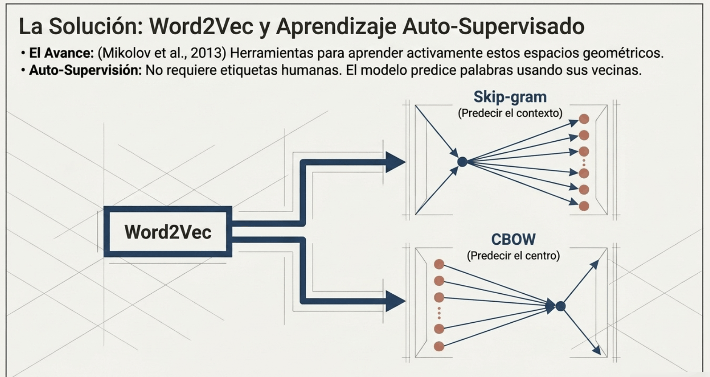
Fig. 1.7. Modelos: Skip-Gram y CBOW.
1.3.1. Mecanismo Base: La Ventana Deslizante
La ventana de contexto deslizante es el mecanismo fundamental que permite a los modelos Word2Vec generar sus propios datos de entrenamiento a partir de texto crudo, escaneándolo secuencialmente sin necesidad de que un humano etiquete los daots (aprendizaje auto-supervisado).
Se puede pensar como un "marco" o "lupa" que se desplaza a lo largo de una oración, palabra por palabra, para agrupar términos basándose en su proximidad.
1.3.1.1. La Mecánica de la Ventana
Para que la ventana funcione, primer se define un parámetro de tamaño :
-
Cuando la ventana se posiciona sobre una oración, aisla una palabra central () e identifica a sus vecinas inmediatas como palabras de contexto ().
-
El tamaño determina el alcance: la ventana capturará hasta palabras hacia la izquierda y hasta palabras hacia la derecha del centro.
Ejemplo Intuitivo: Tomemos la secuencia de texto: "[the] [man] [loves] [his] [son]". Si configuramos el tamaño de la ventana en y nos detenemos en la palabra "loves", la ventana se estructura así:
-
Palabra Central (): "loves*
-
Contexto (hasta 2 palabras antes y después): "the", "man", "his", "son"
A medida que el algoritmo entrena, esta ventana se desliza una posición. Si el centro avanza a la palabra "his", la nueva palabra central es "his" y sus palabras de contexto (respetando los límites de la oración) serán: "man", "loves" y "son".
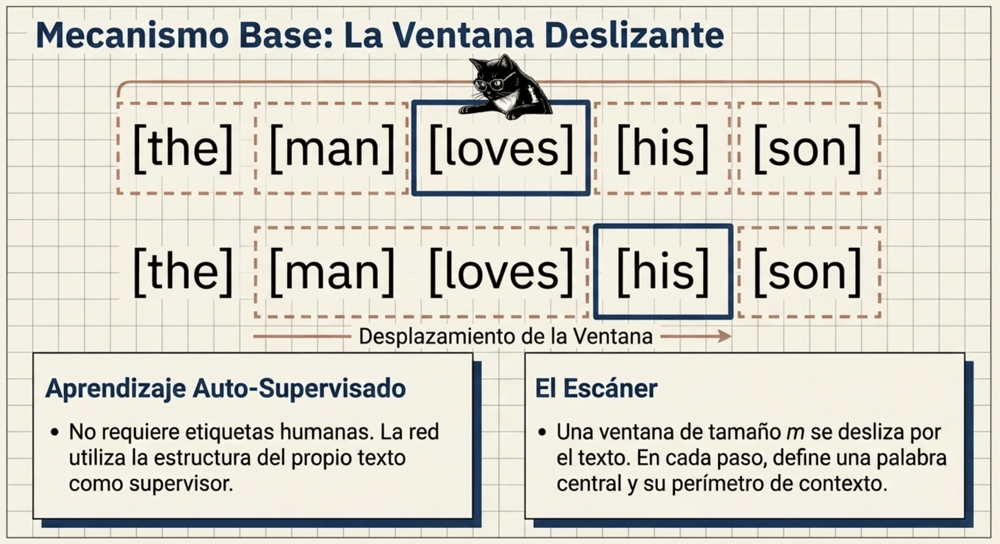
Fig. 1.8. Mecanismo Base de la Ventana Deslizante.
1.3.2. Skip-Gram (Del Centro Hacia el Contexto)
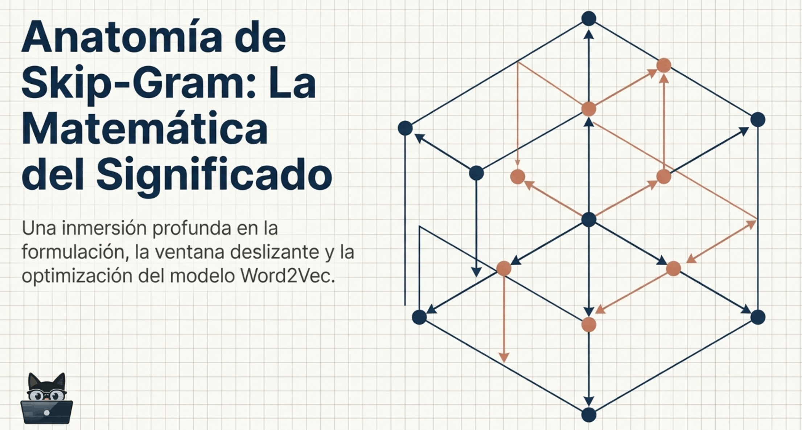
El modelo Skip-Gram es una de las dos arquitecturas principales de Word2Vec. Su presmisa fundamental es asumir que una palabra central es la encargada de "generar" o predecir las palabras que aparecen a su alrededor en una oración.
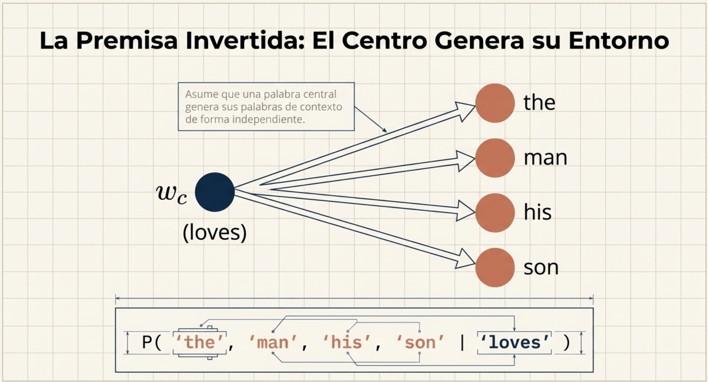
Fig. 1.9. La suposición base del modelo Skip-Gram.
1.3.2.1. Paso 1: La Ventana Deslizante (Definición del Problema)
Imaginemos que el modelo escanéa el texto "crudo" usando una "lupa" o ventana de tamaño :
-
Ejemplo visual: Si la oración es "[the] [man] [loves] [his] [son]" y fijamos el tamaño de la ventana en , la lupa se centra en la palabra "loves" (esta será nuestra palabra central ).
- Las palabras capturadas a su alrededor (hasta 2 posiciones a la izquierda y derecha) son "the", "man", "his" y "son" (estas son nuestras palabras de contexto )
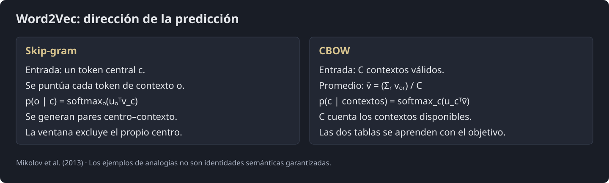
Diagrama visual · Skip-gram y CBOW: flechas de predicción
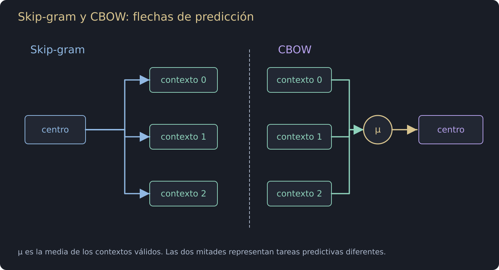
Cómo leer esta imagen
-
En la mitad izquierda, la palabra central alimenta varias predicciones de contexto: esa es la dirección de Skip-gram.
-
En la derecha, los vectores de contexto convergen en una media y el clasificador predice el centro: esa es la dirección de CBOW. El centro no se incluye entre sus propios contextos.
-
Las flechas representan relaciones de la tarea de entrenamiento, no una creación literal de palabras a partir de otras ni una garantía de cercanía semántica.
Fig. 1.10. El modelo de Ventana Deslizante aplicado a Skip-Gram.
1.3.2.2. Paso 2: La Premisa Probabilística (El Embudo de Expansión)
Gráficamente, el modelo se representa como un punto central del cual salen "flechas" hacia múltiples palabras destino, como una especie de "embudo en expansión".
-
El modelo asume independencia condicional: Es decir, cree que cada palabra del contexto es generada por la palabra central de forma totalmente independiente del resto de las palabras.
-
Matemáticamente, la probabilidad de observar todo el contexto dado el centro se reescribe como una multiplicación de probabilidades individuales:
Diagrama visual · Skip-gram y CBOW: flechas de predicción
Cómo leer esta imagen
-
En la mitad izquierda, la palabra central alimenta varias predicciones de contexto: esa es la dirección de Skip-gram.
-
En la derecha, los vectores de contexto convergen en una media y el clasificador predice el centro: esa es la dirección de CBOW. El centro no se incluye entre sus propios contextos.
-
Las flechas representan relaciones de la tarea de entrenamiento, no una creación literal de palabras a partir de otras ni una garantía de cercanía semántica.
Fig. 1.11. Probabilidad Condicional de observar el contexto dado el centro.
1.3.2.3. Paso 3: El Corazón Matemático (Softmax y Producto Punto)
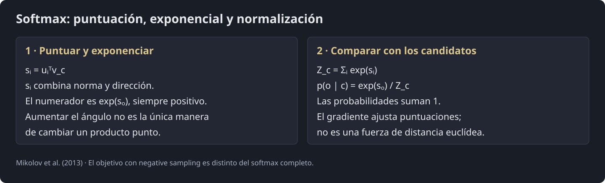
Diagrama visual · De scores a probabilidades normalizadas
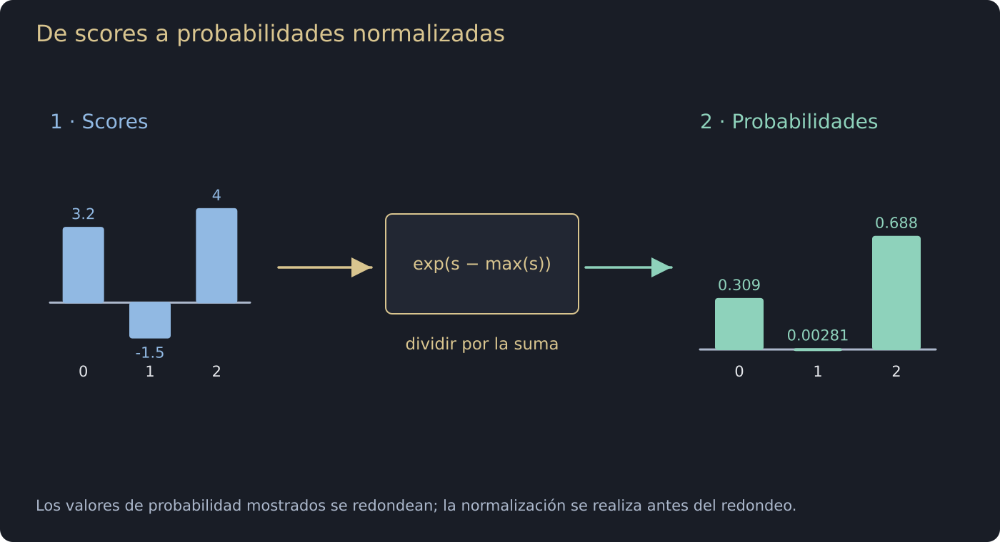
Cómo leer esta imagen
-
Se usan los scores [3.2,−1.5,4.0]. Restar su máximo produce [−0.8,−5.5,0] y conserva exactamente el softmax.
-
Las exponenciales son aproximadamente [0.4493,0.00409,1]. Se divide cada una por su suma, aproximadamente 1.4534.
-
El resultado es [0.3092,0.0028,0.6880], salvo redondeo. Son probabilidades sobre los candidatos del eje elegido; los scores iniciales no eran probabilidades.
Fig. 1.12. Aplicación de la Función Softmax y Producto Punto a los vectores de contexto y central.
¿Cómo calcula exactamente el modelo una probabilidad individual como ?
En Skip-Gram, cada palabra del diccionario tiene asignada una "representación dual", es decir, dos vectores distintos:
-
Un vector , que se usa cuando la palabra actúa como centro .
-
Un vector , que se usa cuando la palabra actúa como contexto .
La probabilidad se modela mediante una operación aplicada sobre el producto punto de estos vectores:
El Numerador
Para el par centro–contexto, el numerador es la exponencial del producto punto, no el producto punto aislado:
El producto punto combina normas y ángulo: . Una puntuación mayor aumenta la probabilidad del contexto respecto de las demás puntuaciones, pero no equivale por sí sola a mayor coseno ni a menor distancia euclídea.
Referencia: Mikolov et al. (2013)
Diagrama visual · De scores a probabilidades normalizadas
Cómo leer esta imagen
-
Se usan los scores [3.2,−1.5,4.0]. Restar su máximo produce [−0.8,−5.5,0] y conserva exactamente el softmax.
-
Las exponenciales son aproximadamente [0.4493,0.00409,1]. Se divide cada una por su suma, aproximadamente 1.4534.
-
El resultado es [0.3092,0.0028,0.6880], salvo redondeo. Son probabilidades sobre los candidatos del eje elegido; los scores iniciales no eran probabilidades.
Fig. 1.13. Interpretación Geométrica del Numerador.
El Denominador
El denominador suma las exponenciales de las puntuaciones para todas las palabras candidatas:
Para puntuaciones finitas, cada probabilidad está entre 0 y 1 y su suma es 1. Para expresarlas como porcentaje se multiplica por 100. El softmax completo requiere evaluar todo el vocabulario; negative sampling utiliza otro objetivo para evitar ese cálculo completo.
Referencia: Mikolov et al. (2013)
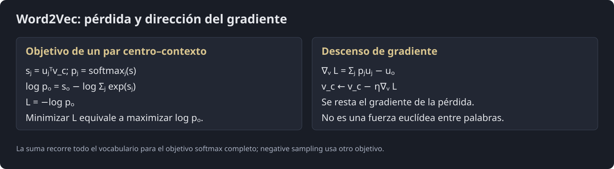
Diagrama visual · El signo de la pérdida fija la dirección del paso
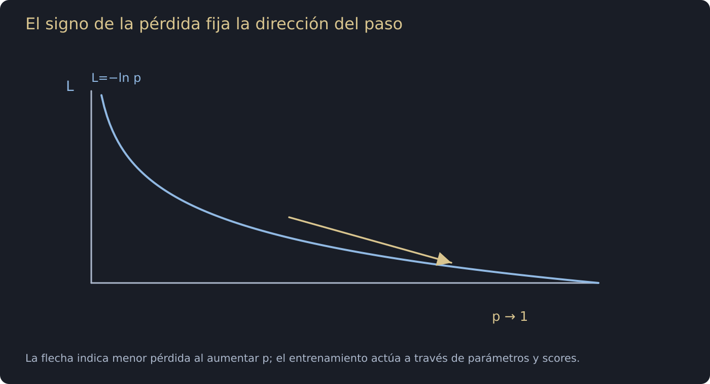
Cómo leer esta imagen
-
La curva representa L=−ln p para 0<p≤1. Una probabilidad pequeña del contexto observado implica una pérdida grande.
-
La flecha señala la dirección de menor pérdida, hacia probabilidades mayores. En Word2Vec el optimizador mueve parámetros y sus scores; no modifica p de forma independiente.
-
Para el vector central, el gradiente de la pérdida es suma_j p_j u_j menos u observado. El optimizador resta ese gradiente. Maximizar log p usa el signo contrario con un paso de ascenso equivalente.
Fig. 1.14. Interpretación Geométrica del Denominador.
1.3.2.4. Paso 4.1.: Estimación de Máxima Verosimilitud y SGD
Para entender el entender el entrenamiento de Skip-Gram, debemos adentrarnos en cómo la red neuronal ajusta las coordenadas de las palabras (los vectores) utilizando la Estimación de Máxima Verosimilitud (Maximum Likelihood Estimation) y el Descenso del Gradiente Estocástico (SGD).
Ventana Deslizante
Para cada posición , el contexto contiene posiciones válidas con y . Skip-gram maximiza el producto de sobre esos pares. Es una independencia condicional asumida por el modelo, no una propiedad del lenguaje. Una ventana dinámica puede reducir aleatoriamente el radio en cada ejemplo; el laboratorio de radio fijo es una variante válida.
Referencia: D2L · Word embedding
¿Cómo afecta el tamaño al aprendizaje?
El tamaño de la ventana tiene impactos directos en el proceso de optimización geométrica y en los recursos computacionales:
-
Define la amplitud de las asociaciones semánticas: Un valor mayor, permite que la palabra central se asocie con términos más lejanos en la oración.
-
Por ej., con , la palabra "loves" aprenderá directamente de las palabras "the", "man", "his" y "son" que están a su alrededor.
-
Al aumentar , el modelo captura relaciones semánticas más amplias, mientras que con un pequeño, se restringe a aprender de las relaciones sintácticas estrictamente locales (sus vecinas inmediatas).
-
-
Impacto en la Complejidad Computacional: Aumentar incrementa linealmente la cantidad de pares de entrenamiento que la red debe procesar.
-
Como cada palabra del vocabulario tiene un vector central y un vector de contexto, la red actualiza las coordenadas calculando gradientes basados en estas distancias.
-
Un más amplio obliga a calcular el error y ajustar la posición frente a muchas más palabras del texto, haciendo que el tiempo de entrenamiento sea mayor por cada oración escaneada.
-
-
Interacción con Palabras de Alta Frecuencia (Ruido): A medida que la ventana crece, es más probable que capture constantemente conectores o artículos (como "the", "a", "in", etc.) que aparecen miles de veces pero no aportan un significado específico útil al contexto.
- Por esta razón, el uso de ventanas amplias hace imperativo utilizar técnicas de submuestreo (subsampling), las cuales descartan probabilísticamente estas palabras frecuentes basadas en su frecuencia relativa, acelerando el aprendizaje y enfocando a la red en co-ocurrencias valiosas.
Diagrama visual · Skip-gram y CBOW: flechas de predicción
Cómo leer esta imagen
-
En la mitad izquierda, la palabra central alimenta varias predicciones de contexto: esa es la dirección de Skip-gram.
-
En la derecha, los vectores de contexto convergen en una media y el clasificador predice el centro: esa es la dirección de CBOW. El centro no se incluye entre sus propios contextos.
-
Las flechas representan relaciones de la tarea de entrenamiento, no una creación literal de palabras a partir de otras ni una garantía de cercanía semántica.
Fig. 1.15. La función de pérdida como productoria de las probabilidades condicionales individuales de cada ventana de contexto.
¿Por qué se utiliza el Logaritmo?
El objetivo de Skip-Gram es encontrar las posiciones geométricas ideales de las palabras para maximizar la probabilidad de generar todas las palabras de contexto correctas a partir de todas las palabras centrales en un texto.
Matemáticamente, la probabilidad conjunta de todo un texto se calcula multiplicando (productoria ) las probabilidades condicionales individuales de cada ventana de contexto. Sin embargo, utilizar la productoria pura presenta dos problemas graves:
-
Problema Computacional (Underflow): Multiplicar miles de probabilidaes (números entre ) da como resultado un número tan microscópico que los ordenadores lo redondean a cero.
-
Probelma Matemático: Calcular derivadas de multiplicaciones masivas es extremadamente complejo.
La solución es aplicar el logaritmo. El logaritmo tiene una propiedad fundamental: Transforma las multiplicaciones en sumas .
Por lo tanto, en lugar de maximizar un producto gigante, minizamos la suma de los logaritmos negativos, lo que se conoce como función de pérdida logarítmica.
La función de pérdida para una secuencia de texto se convierte en una simple sumatoria:
Diagrama visual · El signo de la pérdida fija la dirección del paso
Cómo leer esta imagen
-
La curva representa L=−ln p para 0<p≤1. Una probabilidad pequeña del contexto observado implica una pérdida grande.
-
La flecha señala la dirección de menor pérdida, hacia probabilidades mayores. En Word2Vec el optimizador mueve parámetros y sus scores; no modifica p de forma independiente.
-
Para el vector central, el gradiente de la pérdida es suma_j p_j u_j menos u observado. El optimizador resta ese gradiente. Maximizar log p usa el signo contrario con un paso de ascenso equivalente.
Fig. 1.16. La función de pérdida aplicando logaritmo para convertir la productoria en sumas.
El Desarrollo de la Función de Pérdida y su Derivada
Para un par centro–contexto, definimos y . La log-verosimilitud que se maximiza es La pérdida que se minimiza tiene el signo opuesto: Esta diferencia de signo determina la dirección de la actualización.
Referencia: D2L · Word embedding
Interpretación de la Pérdida
Minimizar aumenta la probabilidad relativa del contexto observado. Sus dos términos comparten parámetros: no se optimizan de forma independiente. El producto punto depende de normas y ángulos.
Referencia: PyTorch · CrossEntropyLoss
Diagrama visual · De scores a probabilidades normalizadas
Cómo leer esta imagen
-
Se usan los scores [3.2,−1.5,4.0]. Restar su máximo produce [−0.8,−5.5,0] y conserva exactamente el softmax.
-
Las exponenciales son aproximadamente [0.4493,0.00409,1]. Se divide cada una por su suma, aproximadamente 1.4534.
-
El resultado es [0.3092,0.0028,0.6880], salvo redondeo. Son probabilidades sobre los candidatos del eje elegido; los scores iniciales no eran probabilidades.
Fig. 1.17. Optimización del Espacio de Máxima Verosimilitud.
Para saber hacia dónde mover el vector de la palabra central , calculamos el gradiente (derivada) de esta función con respecto a . Si derivamos la ecuación anterior paso a paso, obtenemos la "fuerza física" que describimos anteriormente.
Paso 1: Derivar con respecto a
Tomamos la derivada parcial de esa expresión con respecto al vector de la palabra central . Como tenemos una resta, la derivada se separa en dos partes:
Resolviendo la Parte A
La derivada del producto punto con respecto a es simplemente el vector que lo acompaña:
Resolviendo la Parte B (Regla de la Cadena)
La derivada de un logaritmo es .
-
La fracción inicial será: .
-
Ahora derivamos lo de adentro: .
-
Cambiemos el índice a para no confundirnos. La derivada de respecto a es .
Juntando la regla de la cadena para la Parte B nos queda:
Pasos 2, 3 y 4: Uniendo las piezas
Si juntamos la Parte A y la Parte B resueltas, y realizamos la reagrupación algebraica introduciendo el denominador en la sumatoria, llegamos a tu ecuación. Finalmente, reconocemos que el término reagrupado es idéntico a la función Softmax original, lo que nos permite sustituirlo por la probabilidad :
Diagrama visual · El signo de la pérdida fija la dirección del paso
Cómo leer esta imagen
-
La curva representa L=−ln p para 0<p≤1. Una probabilidad pequeña del contexto observado implica una pérdida grande.
-
La flecha señala la dirección de menor pérdida, hacia probabilidades mayores. En Word2Vec el optimizador mueve parámetros y sus scores; no modifica p de forma independiente.
-
Para el vector central, el gradiente de la pérdida es suma_j p_j u_j menos u observado. El optimizador resta ese gradiente. Maximizar log p usa el signo contrario con un paso de ascenso equivalente.
Fig. 1.18. La interpretación del gradiente.
Para ascenso de log-verosimilitud se usa . Para descenso de la pérdida se usa . Ambos dan el mismo paso . La suma incluye también el contexto verdadero. Son direcciones de actualización, no fuerzas que garanticen acercar o alejar las puntas de los vectores.
Referencia: D2L · Word embedding
1.3.2.5. Implementación Básica con PyTorch
1. Importación de Librerías
Primero, importaremos las herramientas que necesitamos:
-
PyTorch(torch,nn,optim): El motor matemático que construirá nuestra red neuronal y calculará las derivadas (gradientes) automáticamente. -
Plotly: Una biblioteca de visualización interactiva avanzada que usaremos para renderizar la animación de nuestros vectores.
Código Python · celda 80
import torch
import torch.nn as nn
import torch.optim as optim
import numpy as np
import plotly.graph_objects as go
from plotly.subplots import make_subplots
import plotly.express as px
from IPython.display import HTML
2. Definición del Modelo y la Ventana Deslizante
Recordemos que matemáticamente, Skip-Gram utiliza dos representaciones para cada palabra:
-
Un vector cuando la palabra es el centro ().
-
Un vector cuando la palabra es el contexto ().
En PyTorch, estas dos representaciones se construyen usando dos capas nn.Embedding. Además, definiremos una función auxiliar para generar nuestros datos de entrenamiento escaneando el texto con una "ventana deslizante".
Código Python · celda 82
class SkipGramModel(nn.Module):
def __init__(self, vocab_size, embedding_dim):
super(SkipGramModel, self).__init__()
# Matriz V: Vectores para las palabras centrales (v_c)
self.center_embeddings = nn.Embedding(
num_embeddings=vocab_size,
embedding_dim=embedding_dim
)
# Matriz U: Vectores para las palabras de contexto (u_j)
self.context_embeddings = nn.Embedding(
num_embeddings=vocab_size,
embedding_dim=embedding_dim
)
def forward(self, center_word_idx):
# 1. Obtenemos el vector espacial de la palabra central (v_c)
v_c = self.center_embeddings(center_word_idx)
# 2. Extraemos TODOS los vectores de contexto simultáneamente (Matriz U)
U = self.context_embeddings.weight
# 3. Producto punto entre la palabra central y todos los contextos (u_j^T * v_c)
logits = torch.matmul(v_c, U.t())
return logits
def generate_training_data(tokens, word_to_idx, window_size):
# Inicializamos una lista vacía para guardar nuestros pares de (centro, contexto)
pairs = []
# Convertimos nuestra lista de palabras en texto a una lista de sus índices numéricos
indices = [word_to_idx[w] for w in tokens]
# Iteramos sobre cada posición y palabra (centro) en nuestra lista de índices
for i, center in enumerate(indices):
# Calculamos el inicio de la ventana, evitando índices negativos (fuera de límite)
start = max(0, i - window_size)
# Calculamos el fin de la ventana, evitando índices que excedan la longitud del texto
end = min(len(indices), i + window_size + 1)
# Iteramos sobre las palabras que cayeron dentro de nuestra ventana matemática
for j in range(start, end):
# Nos aseguramos de no asociar la palabra central consigo misma
if i != j:
# Extraemos el índice de la palabra de contexto válida
context = indices[j]
# Agregamos la tupla (palabra_central, palabra_contexto) a nuestros datos
pairs.append((center, context))
# Retornamos el conjunto de datos completo y listo para entrenar
return pairs
3. Preparación del Corpus y Configuración
Vamos a utilizar un "corpus de juguete" muy pequeño: "el gato come pescado y el perro bebe agua".
A continuación, convertiremos este texto en números (índices), configuraremos nuestra ventana deslizante () e inicializaremos nuestro modelo para que proyecte las palabras en un espacio de 2 dimensiones (ejes X e Y), lo cual nos permitirá visualizar la geometría fácilmente.
Código Python · celda 84
raw_text = "el gato come pescado y el perro bebe agua"
tokens = raw_text.split()
vocabulary = sorted(set(tokens))
vocab_size = len(vocabulary)
word_to_idx = {w: i for i, w in enumerate(vocabulary)}
idx_to_word = {i: w for i, w in enumerate(vocabulary)}
# Generar datos de entrenamiento
WINDOW_SIZE = 1
training_pairs = generate_training_data(tokens, word_to_idx, WINDOW_SIZE)
# Hiperparámetros del modelo
EMBEDDING_DIM = 2
EPOCHS = 150
LEARNING_RATE = 0.05
# Instanciamos el modelo, la pérdida (CrossEntropy) y el optimizador (SGD)
model = SkipGramModel(vocab_size, EMBEDDING_DIM)
criterion = nn.CrossEntropyLoss()
optimizer = optim.SGD(model.parameters(), lr=LEARNING_RATE)
vector_history = []
loss_history = []
print(f"Vocabulario ({vocab_size} palabras): {vocabulary}")
4. El Bucle de Entrenamiento
El bucle calcula logits y aplica CrossEntropyLoss, que combina log-softmax y pérdida negativa. Por eso loss.backward() calcula , con signo opuesto al gradiente de . El optimizador resta ese gradiente. Guardar coordenadas permite visualizar el entrenamiento; la trayectoria depende de la inicialización, los datos y el optimizador.
Referencia: PyTorch · CrossEntropyLoss
Código Python · celda 86
# =====================================================================
# 3. BUCLE DE ENTRENAMIENTO SILENCIOSO
# =====================================================================
print("Entrenando la red neuronal y calculando coordenadas geométricas...")
# Iniciamos el bucle que repetirá el proceso durante todas las épocas configuradas
for epoch in range(EPOCHS):
# Inicializamos el acumulador de la función de pérdida para esta época en particular
total_loss = 0
# Iteramos sobre cada par (centro, contexto real) de nuestro dataset generado
for center, actual_context in training_pairs:
# Convertimos el índice numérico del centro en un Tensor de tipo Long para PyTorch
center_tensor = torch.tensor([center], dtype=torch.long)
# Convertimos el índice numérico del contexto real en un Tensor de tipo Long para PyTorch
context_tensor = torch.tensor([actual_context], dtype=torch.long)
# Reseteamos los gradientes matemáticos del optimizador a cero para no acumular de iteraciones previas
optimizer.zero_grad()
# Pasamos el tensor central por la red neuronal para obtener las predicciones (producto punto espacial)
logits = model(center_tensor)
# Calculamos la diferencia matemática (error) entre las predicciones del modelo y el contexto verdadero
loss = criterion(logits, context_tensor)
# Ejecutamos la magia del cálculo diferencial inverso: calculamos el gradiente (derivada) de cada variable
loss.backward()
# Usamos los gradientes calculados para actualizar espacialmente los pesos (mover los vectores)
optimizer.step()
# Sumamos el valor del error de este par particular al acumulador de la época
total_loss += loss.item()
# Desconectamos los pesos del grafo computacional (.detach), los convertimos a NumPy, hacemos una copia limpia
epoch_snapshot = model.center_embeddings.weight.detach().numpy().copy()
# Guardamos esta matriz geométrica 2D en nuestro historial para usarla luego en la animación
vector_history.append(epoch_snapshot)
# Guardamos el error total acumulado de la época para graficar la curva de aprendizaje
loss_history.append(total_loss)
print("¡Entrenamiento finalizado! Construyendo el entorno visual Plotly...")
Entrenando la red neuronal y calculando coordenadas geométricas... ¡Entrenamiento finalizado! Construyendo el entorno visual Plotly...
5. Visualización Interactiva
La animación muestra los embeddings y la pérdida de una ejecución didáctica. Se pueden comparar trayectorias y cosenos, pero un corpus tan pequeño no demuestra que las categorías deban agruparse ni que la pérdida disminuya en todos los pasos.
Referencia: Mikolov et al. · Word2Vec
Código Python · celda 88
# Preparación de datos para la animación
all_points = np.array(vector_history)
x_min, x_max = all_points[:, :, 0].min() - 0.5, all_points[:, :, 0].max() + 0.5
y_min, y_max = all_points[:, :, 1].min() - 0.5, all_points[:, :, 1].max() + 0.5
max_loss = max(loss_history) * 1.1
# Creación del panel dual
fig = make_subplots(
rows=1, cols=2,
column_widths=[0.65, 0.35],
subplot_titles=("Espacio Vectorial Geométrico", "Curva de Optimización (Loss)")
)
colors = px.colors.qualitative.Plotly
# Configuración Inicial (Época 0)
for i in range(vocab_size):
fig.add_trace(
go.Scatter(
x=[0, vector_history[0][i, 0]], y=[0, vector_history[0][i, 1]],
mode='lines+markers+text', text=["", vocabulary[i]], textposition="top right",
marker=dict(size=[0, 14], color=colors[i % len(colors)], line=dict(width=1, color='DarkSlateGrey')),
line=dict(width=2, color=colors[i % len(colors)]),
name=vocabulary[i], showlegend=False
), row=1, col=1
)
fig.add_trace(
go.Scatter(x=[1], y=[loss_history[0]], mode='lines', line=dict(color='firebrick', width=3),
name='Loss', fill='tozeroy', fillcolor='rgba(178, 34, 34, 0.2)', showlegend=False),
row=1, col=2
)
# Generación de Fotogramas (Frames)
frames = []
for epoch in range(1, EPOCHS):
frame_data = []
for i in range(vocab_size):
frame_data.append(go.Scatter(x=[0, vector_history[epoch][i, 0]], y=[0, vector_history[epoch][i, 1]]))
frame_data.append(go.Scatter(x=list(range(1, epoch + 2)), y=loss_history[:epoch+1]))
frames.append(go.Frame(data=frame_data, name=str(epoch)))
fig.frames = frames
# Configuración del Reproductor Interactivo
fig.update_layout(
template="plotly_white", width=1000, height=550,
updatemenus=[dict(
type="buttons", showactive=False, y=-0.15, x=0.05, xanchor="right", yanchor="top",
buttons=[
dict(label="▶ Reproducir", method="animate", args=[None, dict(frame=dict(duration=80, redraw=False), transition=dict(duration=0), fromcurrent=True, mode="immediate")]),
dict(label="⏸ Pausar", method="animate", args=[[None], dict(frame=dict(duration=0, redraw=False), mode="immediate", transition=dict(duration=0))])
]
)],
sliders=[dict(y=-0.15, x=0.1, active=0, yanchor="top", xanchor="left", len=0.9,
steps=[dict(method='animate', args=[[str(epoch)], dict(mode='immediate', frame=dict(duration=80, redraw=False), transition=dict(duration=0))], label=str(epoch)) for epoch in range(1, EPOCHS)])]
)
# Ajustes de ejes estáticos para evitar saltos
fig.update_xaxes(title_text="Dimensión X", range=[x_min, x_max], showgrid=True, zeroline=True, zerolinewidth=2, zerolinecolor='lightgrey', row=1, col=1)
fig.update_yaxes(title_text="Dimensión Y", range=[y_min, y_max], showgrid=True, zeroline=True, zerolinewidth=2, zerolinecolor='lightgrey', row=1, col=1)
fig.update_xaxes(title_text="Épocas de Entrenamiento", range=[1, EPOCHS], showgrid=True, row=1, col=2)
fig.update_yaxes(title_text="Error Matemático", range=[0, max_loss], showgrid=True, row=1, col=2)
fig.show()
6. Comprobación Matemática: Similitud de Coseno
El coseno compara direcciones: 1 indica dirección idéntica, 0 ortogonalidad y −1 direcciones opuestas. Ninguno de esos valores demuestra por sí solo sinonimia, ausencia de relación o antonimia. El objetivo de entrenamiento usa productos punto y, por tanto, también depende de las normas. Los colores de la animación muestran valores calculados, no resultados semánticos garantizados.
Referencia: Mikolov et al. · Word2Vec
Código Python · celda 90
import matplotlib
import matplotlib.cm as cm
import numpy as np
import plotly.graph_objects as go
# =====================================================================
# 1. CONFIGURACIÓN DEL DEGRADADO Y ENTORNO
# =====================================================================
PALABRA_ANCLA = "gato"
idx_ancla = word_to_idx[PALABRA_ANCLA]
# Normalizador para el mapa de calor (Red-Yellow-Green)
norm = matplotlib.colors.Normalize(vmin=-1, vmax=1)
cmap = matplotlib.colormaps['RdYlGn']
# Limites dinámicos con un margen amplio para que los textos no se corten
all_points = np.array(vector_history)
x_min, x_max = all_points[:, :, 0].min() - 0.8, all_points[:, :, 0].max() + 0.8
y_min, y_max = all_points[:, :, 1].min() - 0.8, all_points[:, :, 1].max() + 0.8
fig = go.Figure()
# =====================================================================
# 2. TRAZOS INICIALES (ÉPOCA 0)
# =====================================================================
vec_ancla_0 = vector_history[0][idx_ancla]
norma_ancla_0 = np.linalg.norm(vec_ancla_0)
# Añadimos un punto central oscuro en el origen (0,0) para anclar visualmente los vectores
fig.add_trace(go.Scatter(
x=[0], y=[0], mode='markers',
marker=dict(size=10, color='#2c3e50', line=dict(width=2, color='white')),
showlegend=False, hoverinfo='skip'
))
for i in range(vocab_size):
vec_actual = vector_history[0][i]
norma_actual = np.linalg.norm(vec_actual)
# Cálculo de Similitud de Coseno
if norma_ancla_0 == 0 or norma_actual == 0:
similitud = 0
else:
similitud = np.dot(vec_ancla_0, vec_actual) / (norma_ancla_0 * norma_actual)
color_hex = matplotlib.colors.to_hex(cmap(norm(similitud)))
line_width = 4.5 if i == idx_ancla else 2.5 # Hacemos la línea del ancla más gruesa
# ESTÉTICA MEJORADA: HTML para dar jerarquía al texto
texto_visible = (
f"<b style='font-size:15px; color:#2c3e50;'>{vocabulary[i]}</b><br>"
f"<span style='font-size:12px; color:#34495e;'>Cos: <b>{similitud:.2f}</b></span><br>"
f"<span style='font-size:10px; color:#7f8c8d;'>({vec_actual[0]:.2f}, {vec_actual[1]:.2f})</span>"
)
fig.add_trace(
go.Scatter(
x=[0, vec_actual[0]],
y=[0, vec_actual[1]],
mode='lines+markers+text',
text=["", texto_visible],
textposition="top right" if vec_actual[0] >= 0 else "top left", # Evita que el texto cruce el origen
marker=dict(size=[0, 16], color=color_hex, line=dict(width=2, color='white')), # Bordes blancos
line=dict(width=line_width, color=color_hex),
showlegend=False
)
)
# Barra de colores lateral más estilizada
fig.add_trace(go.Scatter(
x=[None], y=[None], mode='markers',
marker=dict(
colorscale='RdYlGn', cmin=-1, cmax=1,
colorbar=dict(
title=f"<b>Similitud vs<br>'{PALABRA_ANCLA}'</b>",
tickvals=[-1, -0.5, 0, 0.5, 1],
thickness=20, # Barra más delgada y elegante
outlinewidth=0,
tickfont=dict(size=12, color='#2c3e50')
),
showscale=True
),
showlegend=False
))
# =====================================================================
# 3. GENERACIÓN DE FOTOGRAMAS (ANIMACIÓN FLUIDA)
# =====================================================================
frames = []
for epoch in range(1, EPOCHS):
frame_data = [go.Scatter(x=[0], y=[0])] # Mantenemos el punto de origen en cada frame
vec_ancla_epoca = vector_history[epoch][idx_ancla]
norma_ancla = np.linalg.norm(vec_ancla_epoca)
for i in range(vocab_size):
vec_actual = vector_history[epoch][i]
norma_actual = np.linalg.norm(vec_actual)
if norma_ancla == 0 or norma_actual == 0:
similitud = 0
else:
similitud = np.dot(vec_ancla_epoca, vec_actual) / (norma_ancla * norma_actual)
color_hex = matplotlib.colors.to_hex(cmap(norm(similitud)))
texto_visible = (
f"<b style='font-size:15px; color:#2c3e50;'>{vocabulary[i]}</b><br>"
f"<span style='font-size:12px; color:#34495e;'>Cos: <b>{similitud:.2f}</b></span><br>"
f"<span style='font-size:10px; color:#7f8c8d;'>({vec_actual[0]:.2f}, {vec_actual[1]:.2f})</span>"
)
frame_data.append(
go.Scatter(
x=[0, vec_actual[0]],
y=[0, vec_actual[1]],
text=["", texto_visible],
textposition="top right" if vec_actual[0] >= 0 else "top left",
marker=dict(color=color_hex),
line=dict(color=color_hex)
)
)
frames.append(go.Frame(data=frame_data, name=str(epoch)))
fig.frames = frames
# =====================================================================
# 4. DISEÑO DE LA INTERFAZ Y EJES MODERNIZADOS
# =====================================================================
fig.update_layout(
title=dict(
text=f"Geometría y Similitud de Coseno en vivo (Ancla: <b>{PALABRA_ANCLA.upper()}</b>)",
font=dict(size=20, color='#2c3e50'),
x=0.05 # Alinea el título elegantemente a la izquierda
),
plot_bgcolor='#f8f9fa', # Fondo gris muy tenue
paper_bgcolor='white',
width=950, height=750,
margin=dict(t=80, b=100, l=40, r=40),
updatemenus=[dict(
type="buttons", showactive=False, y=-0.12, x=0.05, xanchor="right", yanchor="top",
buttons=[
dict(label="▶ Reproducir", method="animate", args=[None, dict(frame=dict(duration=80, redraw=True), transition=dict(duration=0), fromcurrent=True, mode="immediate", loop=True)]),
dict(label="⏸ Pausar", method="animate", args=[[None], dict(frame=dict(duration=0, redraw=False), mode="immediate", transition=dict(duration=0))])
]
)],
sliders=[dict(y=-0.12, x=0.1, active=0, yanchor="top", xanchor="left", len=0.9,
currentvalue=dict(prefix="Época: ", font=dict(size=14, color='#2c3e50')),
steps=[dict(method='animate', args=[[str(epoch)], dict(mode='immediate', frame=dict(duration=80, redraw=True), transition=dict(duration=0))], label=str(epoch)) for epoch in range(1, EPOCHS)])]
)
# Ejes estilizados: Grillas punteadas suaves y líneas centrales sólidas
fig.update_xaxes(
title_text="Dimensión X", title_font=dict(size=14),
range=[x_min, x_max], showgrid=True, gridcolor='#e9ecef', griddash='dash',
zeroline=True, zerolinewidth=2.5, zerolinecolor='#bdc3c7'
)
fig.update_yaxes(
title_text="Dimensión Y", title_font=dict(size=14),
range=[y_min, y_max], showgrid=True, gridcolor='#e9ecef', griddash='dash',
zeroline=True, zerolinewidth=2.5, zerolinecolor='#bdc3c7'
)
fig.show()
8. Entrenando a Gran Escala: Negative Sampling + GPU + Corpus Real
Negative sampling utiliza una pérdida logística para distinguir pares observados de pares muestreados: Es otro objetivo, no un cálculo exacto del softmax completo. Un negativo es una muestra de ruido; no demuestra que dos palabras carezcan de relación. Si el ejemplo amplía el vocabulario con CESS pero entrena pares de una frase de juguete, no equivale a entrenar sobre todo CESS. El tiempo y el beneficio de GPU deben medirse.
Referencia: Mikolov et al. · Word2Vec
Código Python · celda 92
import torch
import torch.nn as nn
import torch.optim as optim
import torch.nn.functional as F
import numpy as np
import matplotlib
import plotly.graph_objects as go
import nltk
Código Python · celda 93
# =====================================================================
# 1. DESCARGA DEL CORPUS REAL Y CONFIGURACIÓN DE GPU
# =====================================================================
# Detectamos si hay una GPU disponible para acelerar el entrenamiento masivo
device = torch.device("cuda" if torch.cuda.is_available() else "mps" if torch.backends.mps.is_available() else "cpu")
print(f"Dispositivo detectado: {device.type.upper()}")
# Descargamos el corpus español de noticias de NLTK de forma silenciosa
print("Descargando diccionario real en español...")
nltk.download('cess_esp', quiet=True)
from nltk.corpus import cess_esp
# Filtramos para quedarnos solo con palabras reales (alfabéticas) y en minúscula
all_real_words = list(set([w.lower() for w in cess_esp.words() if w.isalpha()]))
VOCAB_SIZE = 10000
EMBEDDING_DIM = 2
K_NEGATIVES = 5
# Palabras base que queremos observar en la gráfica
core_words = ["gato", "perro", "pescado", "agua", "come", "bebe"]
# Seleccionamos algunas palabras de noticias al azar para ver cómo la red las repele
random_real_words = ["ministro", "empresa", "edificio", "vehículo", 'kremlin', 'latas', 'cautiva', 'ilegítima', 'surgir', 'aires', 'muchas', 'salgan', 'asombrado', 'ahorrado', 'callejas', 'inzaghi', 'convertidas', 'plácidamente', 'buda', 'ecosistema', 'débiles', 'cerrada', 'pasos', 'apresurarse', 'subirán', 'índice', 'falla', 'zapatos', 'pesa', 'parezca', 'totalización', 'necesarias']
# Construimos nuestro vocabulario exacto de 10,000 palabras
words_to_plot = core_words + random_real_words
remaining_words = [w for w in all_real_words if w not in words_to_plot]
vocabulary = words_to_plot + remaining_words[:VOCAB_SIZE - len(words_to_plot)]
vocab_size = len(vocabulary)
word_to_idx = {w: i for i, w in enumerate(vocabulary)}
idx_to_word = {i: w for i, w in enumerate(vocabulary)}
print(f"Vocabulario construido con {vocab_size} palabras reales. (Ejemplos: {vocabulary[100]}, {vocabulary[2000]})")
# Relaciones semánticas que nuestra red debe aprender de los datos
base_positive_pairs = [
("gato", "come"), ("gato", "pescado"),
("perro", "bebe"), ("perro", "agua")
]
Dispositivo detectado: CUDA Descargando diccionario real en español... Vocabulario construido con 10000 palabras reales. (Ejemplos: llovía, aranzubía)
Código Python · celda 94
# =====================================================================
# 2. MODELO DE NEGATIVE SAMPLING EN PYTORCH
# =====================================================================
class SkipGramNegativeSampling(nn.Module):
def __init__(self, vocab_size, embedding_dim):
super(SkipGramNegativeSampling, self).__init__()
self.center_embeddings = nn.Embedding(vocab_size, embedding_dim)
self.context_embeddings = nn.Embedding(vocab_size, embedding_dim)
self.center_embeddings.weight.data.uniform_(-0.5, 0.5)
self.context_embeddings.weight.data.uniform_(-0.5, 0.5)
def forward(self, center_word, positive_context, negative_contexts):
# Movemos las operaciones a la GPU
v_c = self.center_embeddings(center_word)
u_pos = self.context_embeddings(positive_context)
u_neg = self.context_embeddings(negative_contexts)
# 1. Atracción: Minimizamos la distancia al contexto real
positive_score = torch.sum(v_c * u_pos, dim=1)
loss_positive = -F.logsigmoid(positive_score)
# 2. Repulsión: Maximizamos la distancia a las palabras aleatorias
v_c_expanded = v_c.unsqueeze(2)
negative_scores = torch.bmm(u_neg, v_c_expanded).squeeze(-1)
loss_negative = -torch.sum(F.logsigmoid(-negative_scores), dim=1)
return (loss_positive + loss_negative).mean()
# Instanciamos y ENVIAMOS A LA GPU
model = SkipGramNegativeSampling(vocab_size, EMBEDDING_DIM).to(device)
optimizer = optim.SGD(model.parameters(), lr=0.15)
Código Python · celda 95
# =====================================================================
# 3. ENTRENAMIENTO ACELERADO
# =====================================================================
EPOCHS = 700
vector_history = []
print(f"Entrenando red con Negative Sampling en {device.type.upper()}...")
for epoch in range(EPOCHS):
centros, positivos, negativos = [], [], []
# Construimos un gran lote de entrenamiento (batch) simulando un texto largo
for _ in range(50): # Repetimos los patrones para simular frecuencia en el texto
for c, p in base_positive_pairs:
centros.append(word_to_idx[c])
positivos.append(word_to_idx[p])
# Seleccionamos K palabras completamente aleatorias del diccionario real
negativos.append(np.random.randint(0, vocab_size, K_NEGATIVES).tolist())
# Enviamos los tensores a la memoria de la GPU
center_tensor = torch.tensor(centros, dtype=torch.long).to(device)
positive_tensor = torch.tensor(positivos, dtype=torch.long).to(device)
negative_tensor = torch.tensor(negativos, dtype=torch.long).to(device)
optimizer.zero_grad()
loss = model(center_tensor, positive_tensor, negative_tensor)
loss.backward()
optimizer.step()
# Extraemos SOLO las palabras que nos interesa graficar y las regresamos a la CPU
indices_grafica = torch.tensor([word_to_idx[w] for w in words_to_plot]).to(device)
snapshot = model.center_embeddings(indices_grafica).detach().cpu().numpy()
vector_history.append(snapshot)
print("¡Procesamiento finalizado! Preparando entorno gráfico...")
Entrenando red con Negative Sampling en CUDA... ¡Procesamiento finalizado! Preparando entorno gráfico...
Código Python · celda 96
# =====================================================================
# 4. VISUALIZACIÓN DE LA GEOMETRÍA FINAL
# =====================================================================
PALABRA_ANCLA = "gato"
idx_ancla_filtrado = words_to_plot.index(PALABRA_ANCLA)
norm = matplotlib.colors.Normalize(vmin=-1, vmax=1)
cmap = matplotlib.colormaps['RdYlGn']
all_points = np.array(vector_history)
x_min, x_max = all_points[:, :, 0].min() - 0.8, all_points[:, :, 0].max() + 0.8
y_min, y_max = all_points[:, :, 1].min() - 0.8, all_points[:, :, 1].max() + 0.8
fig = go.Figure()
# Origen (0,0)
fig.add_trace(go.Scatter(
x=[0], y=[0], mode='markers',
marker=dict(size=10, color='#2c3e50', line=dict(width=2, color='white')),
showlegend=False, hoverinfo='skip'
))
for i, palabra in enumerate(words_to_plot):
vec_actual = vector_history[0][i]
line_width = 4.5 if i == idx_ancla_filtrado else 2.5
texto_visible = f"<b style='font-size:14px; color:#2c3e50;'>{palabra}</b>"
fig.add_trace(go.Scatter(
x=[0, vec_actual[0]], y=[0, vec_actual[1]], mode='lines+markers+text',
text=["", texto_visible], textposition="top right" if vec_actual[0] >= 0 else "top left",
marker=dict(size=[0, 16], color="#7f8c8d", line=dict(width=2, color='white')),
line=dict(width=line_width, color="#7f8c8d"), showlegend=False
))
# Barra de Similitud
fig.add_trace(go.Scatter(
x=[None], y=[None], mode='markers',
marker=dict(
colorscale='RdYlGn', cmin=-1, cmax=1,
colorbar=dict(title=f"<b>Similitud vs<br>'{PALABRA_ANCLA}'</b>", tickvals=[-1, -0.5, 0, 0.5, 1], thickness=20, outlinewidth=0),
showscale=True
), showlegend=False
))
frames = []
for epoch in range(1, EPOCHS):
frame_data = [go.Scatter(x=[0], y=[0])]
vec_ancla_epoca = vector_history[epoch][idx_ancla_filtrado]
norma_ancla = np.linalg.norm(vec_ancla_epoca)
for i, palabra in enumerate(words_to_plot):
vec_actual = vector_history[epoch][i]
norma_actual = np.linalg.norm(vec_actual)
similitud = 0 if (norma_ancla == 0 or norma_actual == 0) else np.dot(vec_ancla_epoca, vec_actual) / (norma_ancla * norma_actual)
color_hex = matplotlib.colors.to_hex(cmap(norm(similitud)))
# Destacamos visualmente las palabras de ruido reales
is_noise = palabra in random_real_words
label_color = "#e74c3c" if is_noise else "#2c3e50"
noise_flag = " (Ruido)" if is_noise else ""
texto_visible = (
f"<b style='font-size:15px; color:{label_color};'>{palabra}{noise_flag}</b><br>"
f"<span style='font-size:12px; color:#34495e;'>Cos: <b>{similitud:.2f}</b></span>"
)
frame_data.append(go.Scatter(
x=[0, vec_actual[0]], y=[0, vec_actual[1]],
text=["", texto_visible], textposition="top right" if vec_actual[0] >= 0 else "top left",
marker=dict(color=color_hex), line=dict(color=color_hex)
))
frames.append(go.Frame(data=frame_data, name=str(epoch)))
fig.frames = frames
fig.update_layout(
title=dict(text=f"Negative Sampling GPU con Diccionario Real (Ancla: <b>{PALABRA_ANCLA.upper()}</b>)", font=dict(size=20, color='#2c3e50'), x=0.05),
plot_bgcolor='#f8f9fa', paper_bgcolor='white', width=1000, height=750, margin=dict(t=80, b=100, l=40, r=40),
updatemenus=[dict(type="buttons", showactive=False, y=-0.12, x=0.05, xanchor="right", yanchor="top",
buttons=[
dict(label="▶ Reproducir", method="animate", args=[None, dict(frame=dict(duration=80, redraw=True), transition=dict(duration=0), fromcurrent=True, mode="immediate", loop=True)]),
dict(label="⏸ Pausar", method="animate", args=[[None], dict(frame=dict(duration=0, redraw=False), mode="immediate", transition=dict(duration=0))])
]
)],
sliders=[dict(y=-0.12, x=0.1, active=0, yanchor="top", xanchor="left", len=0.9, currentvalue=dict(prefix="Época: ", font=dict(size=14, color='#2c3e50')),
steps=[dict(method='animate', args=[[str(epoch)], dict(mode='immediate', frame=dict(duration=80, redraw=True), transition=dict(duration=0))], label=str(epoch)) for epoch in range(1, EPOCHS)])]
)
fig.update_xaxes(title_text="Dimensión X", range=[x_min, x_max], showgrid=True, gridcolor='#e9ecef', griddash='dash', zeroline=True, zerolinewidth=2.5, zerolinecolor='#bdc3c7')
fig.update_yaxes(title_text="Dimensión Y", range=[y_min, y_max], showgrid=True, gridcolor='#e9ecef', griddash='dash', zeroline=True, zerolinewidth=2.5, zerolinecolor='#bdc3c7')
fig.show()
Output hidden; open in https://colab.research.google.com to view.
1.3.3. CBOW (Continuous Bag of Words)
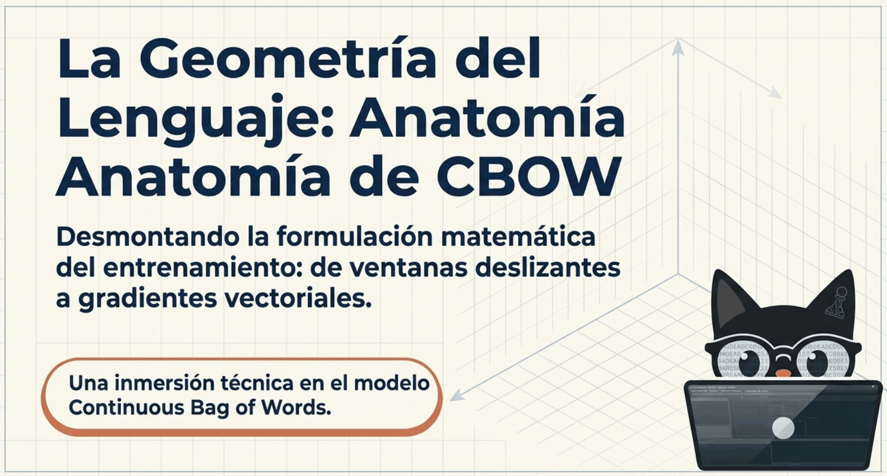
CBOW asigna una distribución de probabilidad a la palabra central a partir de las palabras del contexto. El contexto puede ser ambiguo: el modelo no presupone que exista una única palabra deducible con certeza.
Referencia: D2L · Word embedding
Diagrama visual · Skip-gram y CBOW: flechas de predicción
Cómo leer esta imagen
-
En la mitad izquierda, la palabra central alimenta varias predicciones de contexto: esa es la dirección de Skip-gram.
-
En la derecha, los vectores de contexto convergen en una media y el clasificador predice el centro: esa es la dirección de CBOW. El centro no se incluye entre sus propios contextos.
-
Las flechas representan relaciones de la tarea de entrenamiento, no una creación literal de palabras a partir de otras ni una garantía de cercanía semántica.
Fig. 1.19. Diferencias entre el Modelo de Red Neuronal Skip-Gram y CBOW.
Paso 1: La Ventana Deslizante (La Premisa Invertida)
Imaginemos nuevamente el "escáner" sobre el texto crudo con un tamaño de ventana .
-
El Problema: En lugar de aislar el centro para adivinar el entorno, la lupa aísla todo el contexto circundante para adivinar el "hueco" central.
-
Ejemplo Visual: El modelo reciben como entrada las palabras de contexto
-
Su único objetivo u "objetivo oculto a predecir" es la palabra central .
-
Gráficamente, esto se comporta como un "embudo de compresión", donde múltiples flechas de entrada convergen hacia un único punto de salida.
-
Diagrama visual · Skip-gram y CBOW: flechas de predicción
Cómo leer esta imagen
-
En la mitad izquierda, la palabra central alimenta varias predicciones de contexto: esa es la dirección de Skip-gram.
-
En la derecha, los vectores de contexto convergen en una media y el clasificador predice el centro: esa es la dirección de CBOW. El centro no se incluye entre sus propios contextos.
-
Las flechas representan relaciones de la tarea de entrenamiento, no una creación literal de palabras a partir de otras ni una garantía de cercanía semántica.
Fig. 1.20. La Ventana Deslizante en CBOW.
Paso 2: Compresión Espacial (El Vector Promediado)
Si el contexto válido tiene posiciones, su representación promediada es En una ventana completa de radio , ; junto a los extremos de una secuencia puede ser menor. Es una suma de vectores, no una tupla dividida por un escalar.
Referencia: D2L · Word embedding
Diagrama visual · Skip-gram y CBOW: flechas de predicción
Cómo leer esta imagen
-
En la mitad izquierda, la palabra central alimenta varias predicciones de contexto: esa es la dirección de Skip-gram.
-
En la derecha, los vectores de contexto convergen en una media y el clasificador predice el centro: esa es la dirección de CBOW. El centro no se incluye entre sus propios contextos.
-
Las flechas representan relaciones de la tarea de entrenamiento, no una creación literal de palabras a partir de otras ni una garantía de cercanía semántica.
Fig. 1.21. El vector de contexto se promedia ya que necesita "fusionar" el entorno en un único "vector de referencia".
Paso 3: Softmax y Producto Punto
La puntuación de cada candidato es y la probabilidad es . El numerador contiene la exponencial. La puntuación combina normas y ángulo: elegir el mayor producto punto no equivale a elegir el vector más paralelo.
Referencia: D2L · Word embedding
Diagrama visual · De scores a probabilidades normalizadas
Cómo leer esta imagen
-
Se usan los scores [3.2,−1.5,4.0]. Restar su máximo produce [−0.8,−5.5,0] y conserva exactamente el softmax.
-
Las exponenciales son aproximadamente [0.4493,0.00409,1]. Se divide cada una por su suma, aproximadamente 1.4534.
-
El resultado es [0.3092,0.0028,0.6880], salvo redondeo. Son probabilidades sobre los candidatos del eje elegido; los scores iniciales no eran probabilidades.
Fig. 1.22. CBOW puntúa candidatos mediante productos punto con el promedio del contexto y normaliza sus exponenciales.
Referencia: D2L · Word embedding
Paso 4: Optimización y Entrenamiento
El objetivo inamovible es maximizar la verosimilitud de acertar la palabra central a lo largo de millones de ventanas iterando sbore el texto, lo cual equivale a minimizar la pérdida logarítmica:
donde
-
: Representa todas las iteraciones temporales o ventanas de texto deslizantes a lo largo del vocabulario de entrenamiento.
-
: La palabra central (el objetivo oculto) que el modelo debe adivinar en el paso temporal .
-
: El contexto (las palabras del contexto) que rodean al hueco central en ese mismo paso.
Para una ventana, . El descenso favorece la puntuación del centro observado respecto de los otros candidatos. No garantiza una distancia euclídea menor ni elimina todas las relaciones con palabras que no fueron elegidas.
Referencia: D2L · Word embedding
Diagrama visual · De scores a probabilidades normalizadas
Cómo leer esta imagen
-
Se usan los scores [3.2,−1.5,4.0]. Restar su máximo produce [−0.8,−5.5,0] y conserva exactamente el softmax.
-
Las exponenciales son aproximadamente [0.4493,0.00409,1]. Se divide cada una por su suma, aproximadamente 1.4534.
-
El resultado es [0.3092,0.0028,0.6880], salvo redondeo. Son probabilidades sobre los candidatos del eje elegido; los scores iniciales no eran probabilidades.
Fig. 1.23. La meta principal de CBOW es maximizar la probabilidad condicional de acertar las palabras centrales correctas a lo largo de millones de ventanas en el corpus.
1. Definición de la Función de Probabilidad (Softmax)
La probabilidad de predecir la palabra central correcta dado el contexto se define mediante la función softmax:
Donde:
-
: Es el vector de salida (output vector) de la palabra central correcta.
-
: Es el vector de salida para cualquier palabra en el vocabulario .
-
: Es el vector promedio del contexto. Si tenemos una ventana de contexto de tamaño (es decir, palabras a la izquierda y a la derecha), el vector promedio se calcula sumando los vectores de entrada de las palabras del contexto y dividiendo por la cantidad total:
Para facilitar el cálculo de las derivadas, trabajamos con el logaritmo natural de la probabilidad (queremos maximizar esta función):
Aplicando las propiedades de los logaritmos (el logaritmo de un cociente es la resta de los logaritmos), obtenemos:
2. Derivación mediante la Regla de la Cadena
Nuestro objetivo es actualizar los vectores individuales del contexto, es decir, queremos encontrar el gradiente respecto a un vector de contexto específico .
Para esto, aplicamos la regla de la cadena:
Paso A: Derivada respecto al vector promedio
Derivamos los dos términos de la función objetivo:El primer término es directo:
Para el segundo término, derivamos el logaritmo y luego aplicamos la regla de la cadena para la sumatoria interna:
Si observamos bien este resultado, podemos reagrupar la fracción dentro de la sumatoria para recuperar nuestra definición inicial de :
Juntando ambos términos, la derivada parcial respecto a es:
Paso B: Derivada del vector promedio respecto al vector individual
Recordemos que .
La derivada de esta suma promedio respecto a un solo vector es simplemente la constante escalar:
3. Resultado Final
Multiplicando los resultados del Paso A y el Paso B (Regla de la Cadena), llegamos exactamente a la ecuación de la imagen:
Diagrama visual · De scores a probabilidades normalizadas
Cómo leer esta imagen
-
Se usan los scores [3.2,−1.5,4.0]. Restar su máximo produce [−0.8,−5.5,0] y conserva exactamente el softmax.
-
Las exponenciales son aproximadamente [0.4493,0.00409,1]. Se divide cada una por su suma, aproximadamente 1.4534.
-
El resultado es [0.3092,0.0028,0.6880], salvo redondeo. Son probabilidades sobre los candidatos del eje elegido; los scores iniciales no eran probabilidades.
Fig. 1.24. El "centro de gravedad" del contexto () experimenta simultáneamente una fuerza de atracción () que lo arrastra hacia la coordenada real de la palabra "loves", y una fuerza de repulsión () que lo empuja alejándolo del resto de las palabras irrelevantes del vocabulario, ponderado por el error de predicción actual.
Con posiciones en el contexto, el gradiente de la log-verosimilitud respecto de una aparición es El gradiente de la pérdida negativa cambia de signo. Si una palabra aparece varias veces, su fila compartida recibe la suma de las contribuciones de sus apariciones. Las direcciones ajustan puntuaciones; no son fuerzas físicas entre palabras.
Referencia: D2L · Word embedding
Diagrama visual · Skip-gram y CBOW: flechas de predicción
Cómo leer esta imagen
-
En la mitad izquierda, la palabra central alimenta varias predicciones de contexto: esa es la dirección de Skip-gram.
-
En la derecha, los vectores de contexto convergen en una media y el clasificador predice el centro: esa es la dirección de CBOW. El centro no se incluye entre sus propios contextos.
-
Las flechas representan relaciones de la tarea de entrenamiento, no una creación literal de palabras a partir de otras ni una garantía de cercanía semántica.
1.3.3.1. Implementación Básica en PyTorch
1. Importación de Librerías
Primero, importaremos las herramientas que necesitamos:
-
PyTorch(torch,nn,optim): El motor matemático que construirá nuestra red neuronal y calculará las derivadas (gradientes) automáticamente. -
Plotly: Una biblioteca de visualización interactiva avanzada que usaremos para renderizar la animación de nuestros vectores.
Código Python · celda 124
import torch
import torch.nn as nn
import torch.optim as optim
import numpy as np
import plotly.graph_objects as go
from plotly.subplots import make_subplots
import plotly.express as px
import matplotlib
from IPython.display import HTML
2. El Modelo y el Generador de Datos (CBOW)
Mientras que Skip-Gram usa la palabra central para predecir múltiples palabras de contexto, CBOW toma múltiples palabras de contexto, las comprime espacialmente promediándolas, y con ese nuevo "vector unificado" intenta producir una única palabra central.
- Detalle Técnico texto en negrita: Al final del entrenamiento de CBOW, se suele guardar la matriz de contexto (los vectores ) como los embeddings definitivos, descartando los centrales.
Código Python · celda 126
# =====================================================================
# 1. ARQUITECTURA DEL MODELO CBOW
# =====================================================================
class CBOWModel(nn.Module):
def __init__(self, vocab_size, embedding_dim):
super(CBOWModel, self).__init__()
# Matriz V: Vectores para las palabras de contexto (el entorno)
# En CBOW, estos serán nuestros embeddings finales.
self.context_embeddings = nn.Embedding(
num_embeddings=vocab_size,
embedding_dim=embedding_dim
)
# Matriz U: Vectores para las palabras centrales (el objetivo a adivinar)
self.center_embeddings = nn.Embedding(
num_embeddings=vocab_size,
embedding_dim=embedding_dim
)
def forward(self, context_idxs):
# 1. Extraemos los vectores (v_i) de todas las palabras del entorno
v_context = self.context_embeddings(context_idxs)
# 2. Compresión Espacial: Promediamos todos los vectores del entorno
# para crear un único vector de referencia (\bar{v}_o)
v_o = torch.mean(v_context, dim=0)
# 3. Extraemos TODOS los vectores centrales (Matriz U) del vocabulario
U = self.center_embeddings.weight
# 4. Producto punto entre el contexto promediado y todos los posibles centros
logits = torch.matmul(v_o, U.t())
# PyTorch espera un batch_size, así que añadimos una dimensión extra (1, vocab_size)
return logits.unsqueeze(0)
3. Implementación de la Ventana Deslizante
Código Python · celda 128
# =====================================================================
# 2. GENERADOR DE VENTANAS DESLIZANTES
# =====================================================================
def generate_cbow_training_data(tokens, word_to_idx, window_size):
pairs = []
indices = [word_to_idx[w] for w in tokens]
for i, center in enumerate(indices):
context = []
# Recolectamos las palabras de la izquierda
for j in range(max(0, i - window_size), i):
context.append(indices[j])
# Recolectamos las palabras de la derecha
for j in range(i + 1, min(len(indices), i + window_size + 1)):
context.append(indices[j])
# Solo añadimos el par si hay contexto (evitamos problemas en los bordes)
if len(context) > 0:
# Ahora guardamos: ([lista_de_contextos], palabra_central)
pairs.append((context, center))
return pairs
4. Configuración del Entorno
Código Python · celda 130
# =====================================================================
# CONFIGURACIÓN DEL ENTORNO
# =====================================================================
raw_text = "el gato come pescado y el perro bebe agua"
tokens = raw_text.split()
vocabulary = sorted(set(tokens))
vocab_size = len(vocabulary)
word_to_idx = {w: i for i, w in enumerate(vocabulary)}
idx_to_word = {i: w for i, w in enumerate(vocabulary)}
WINDOW_SIZE = 1
# Usamos nuestra nueva función generadora
training_pairs = generate_cbow_training_data(tokens, word_to_idx, WINDOW_SIZE)
EMBEDDING_DIM = 2
EPOCHS = 150
LEARNING_RATE = 0.05
model = CBOWModel(vocab_size, EMBEDDING_DIM)
criterion = nn.CrossEntropyLoss()
optimizer = optim.SGD(model.parameters(), lr=LEARNING_RATE)
vector_history = []
loss_history = []
print(f"Vocabulario ({vocab_size} palabras): {vocabulary}")
5. Entrenamiento
La lógica de actualización sigue siendo el SGD, pero ahora alimentamos la red con tensores que contienen múltiples índices de contexto.
Ahora guardamos
context_embeddingsen lugar decenter_embeddings.
Código Python · celda 132
# =====================================================================
# 3. BUCLE DE ENTRENAMIENTO SILENCIOSO
# =====================================================================
print("Entrenando la red CBOW y aplicando fuerzas espaciales...")
for epoch in range(EPOCHS):
total_loss = 0
# Ahora iteramos sobre (entorno_colectivo, centro_real)
for context_words, actual_center in training_pairs:
# Convertimos la LISTA de contexto y el entero central a Tensores
context_tensor = torch.tensor(context_words, dtype=torch.long)
center_tensor = torch.tensor([actual_center], dtype=torch.long)
optimizer.zero_grad()
# Pasamos el entorno colectivo por la red
logits = model(context_tensor)
# Medimos el error comparando la predicción contra la palabra central real
loss = criterion(logits, center_tensor)
# Fuerzas magnéticas: Atracción y Repulsión
loss.backward()
optimizer.step()
total_loss += loss.item()
# ATENCIÓN: En CBOW nos importan los vectores de contexto (V) como embeddings finales.
epoch_snapshot = model.context_embeddings.weight.detach().numpy().copy()
vector_history.append(epoch_snapshot)
loss_history.append(total_loss)
print("Entrenamiento finalizado. Preparando el entorno de Plotly...")
Entrenando la red CBOW y aplicando fuerzas espaciales... Entrenamiento finalizado. Preparando el entorno de Plotly...
6. Visualización Interactiva
Código Python · celda 134
# =====================================================================
# 4. REPRODUCTOR INTERACTIVO Y SIMILITUD DE COSENO
# =====================================================================
PALABRA_ANCLA = "gato"
idx_ancla = word_to_idx[PALABRA_ANCLA]
norm = matplotlib.colors.Normalize(vmin=-1, vmax=1)
cmap = matplotlib.colormaps['RdYlGn']
all_points = np.array(vector_history)
x_min, x_max = all_points[:, :, 0].min() - 0.8, all_points[:, :, 0].max() + 0.8
y_min, y_max = all_points[:, :, 1].min() - 0.8, all_points[:, :, 1].max() + 0.8
fig = make_subplots(
rows=1, cols=2,
column_widths=[0.65, 0.35],
subplot_titles=(f"Espacio CBOW (Ancla: {PALABRA_ANCLA.upper()})", "Pérdida Logarítmica (Loss)")
)
# Punto de origen (0,0)
fig.add_trace(go.Scatter(
x=[0], y=[0], mode='markers',
marker=dict(size=10, color='#2c3e50', line=dict(width=2, color='white')),
showlegend=False, hoverinfo='skip'
), row=1, col=1)
# Época 0 (Inicialización)
vec_ancla_0 = vector_history[0][idx_ancla]
norma_ancla_0 = np.linalg.norm(vec_ancla_0)
for i in range(vocab_size):
vec_actual = vector_history[0][i]
norma_actual = np.linalg.norm(vec_actual)
similitud = 0 if norma_ancla_0 == 0 or norma_actual == 0 else np.dot(vec_ancla_0, vec_actual) / (norma_ancla_0 * norma_actual)
color_hex = matplotlib.colors.to_hex(cmap(norm(similitud)))
line_width = 4.5 if i == idx_ancla else 2.5
texto_visible = (f"<b style='font-size:15px; color:#2c3e50;'>{vocabulary[i]}</b><br>"
f"<span style='font-size:12px; color:#34495e;'>Cos: <b>{similitud:.2f}</b></span>")
fig.add_trace(go.Scatter(
x=[0, vec_actual[0]], y=[0, vec_actual[1]], mode='lines+markers+text',
text=["", texto_visible], textposition="top right" if vec_actual[0] >= 0 else "top left",
marker=dict(size=[0, 16], color=color_hex, line=dict(width=2, color='white')),
line=dict(width=line_width, color=color_hex), showlegend=False
), row=1, col=1)
# Curva de Loss (Época 0)
fig.add_trace(go.Scatter(
x=[1], y=[loss_history[0]], mode='lines',
line=dict(color='firebrick', width=3), fill='tozeroy',
fillcolor='rgba(178, 34, 34, 0.2)', showlegend=False
), row=1, col=2)
# Fotogramas
frames = []
for epoch in range(1, EPOCHS):
frame_data = [go.Scatter(x=[0], y=[0])]
vec_ancla_epoca = vector_history[epoch][idx_ancla]
norma_ancla = np.linalg.norm(vec_ancla_epoca)
for i in range(vocab_size):
vec_actual = vector_history[epoch][i]
norma_actual = np.linalg.norm(vec_actual)
similitud = 0 if norma_ancla == 0 or norma_actual == 0 else np.dot(vec_ancla_epoca, vec_actual) / (norma_ancla * norma_actual)
color_hex = matplotlib.colors.to_hex(cmap(norm(similitud)))
texto_visible = (f"<b style='font-size:15px; color:#2c3e50;'>{vocabulary[i]}</b><br>"
f"<span style='font-size:12px; color:#34495e;'>Cos: <b>{similitud:.2f}</b></span>")
frame_data.append(go.Scatter(
x=[0, vec_actual[0]], y=[0, vec_actual[1]],
text=["", texto_visible], textposition="top right" if vec_actual[0] >= 0 else "top left",
marker=dict(color=color_hex), line=dict(color=color_hex)
))
frame_data.append(go.Scatter(x=list(range(1, epoch + 2)), y=loss_history[:epoch+1]))
frames.append(go.Frame(data=frame_data, name=str(epoch)))
fig.frames = frames
# Configuración final (Botones y Sliders)
fig.update_layout(
plot_bgcolor='#f8f9fa', paper_bgcolor='white', width=1100, height=650,
margin=dict(t=60, b=100, l=40, r=40),
updatemenus=[dict(
type="buttons", showactive=False, y=-0.12, x=0.05, xanchor="right", yanchor="top",
buttons=[
dict(label="▶ Reproducir", method="animate", args=[None, dict(frame=dict(duration=80, redraw=True), transition=dict(duration=0), fromcurrent=True, mode="immediate", loop=False)]),
dict(label="⏸ Pausar", method="animate", args=[[None], dict(frame=dict(duration=0, redraw=False), mode="immediate", transition=dict(duration=0))])
]
)],
sliders=[dict(y=-0.12, x=0.1, active=0, yanchor="top", xanchor="left", len=0.9,
currentvalue=dict(prefix="Época: ", font=dict(size=14, color='#2c3e50')),
steps=[dict(method='animate', args=[[str(epoch)], dict(mode='immediate', frame=dict(duration=80, redraw=True), transition=dict(duration=0))], label=str(epoch)) for epoch in range(1, EPOCHS)])]
)
fig.update_xaxes(title_text="Dimensión X", range=[x_min, x_max], showgrid=True, gridcolor='#e9ecef', zeroline=True, zerolinewidth=2.5, zerolinecolor='#bdc3c7', row=1, col=1)
fig.update_yaxes(title_text="Dimensión Y", range=[y_min, y_max], showgrid=True, gridcolor='#e9ecef', zeroline=True, zerolinewidth=2.5, zerolinecolor='#bdc3c7', row=1, col=1)
fig.update_xaxes(title_text="Épocas", range=[1, EPOCHS], showgrid=True, row=1, col=2)
fig.update_yaxes(title_text="Pérdida (Loss)", range=[0, max(loss_history)*1.1], showgrid=True, row=1, col=2)
fig.show()
Premisa del modelo CBOW: El entorno colectivo (promediado) determina qué palabra exacta va en el centro.
En nuestro gráfico de CBOW, la relación más fuerte de "gato" ha cambiado; ahora está muy cerca de "come" (Similitud: 0.85) y de "y" (Similitud: 0.70), mientras que "perro" ha bajado a 0.47. texto en negrita
-
¿Por qué sucede esto? Como CBOW comprime el contexto promediando las palabras del entorno, la red tiende a agrupar geométricamente palabras que aparecen juntas físicamente para resolver el "rompecabezas" temporal.
-
CBOW ha aprendido una dependencia sintáctica frecuente. Para CBOW, "gato" y "come" forman un bloque estructural recurrente, por lo que sus vectores se atraen para facilitar el cálculo de probabilidad conjunta.
-
La Curva de Pérdida (Panel derecho): Esta curva descendente confirma que la reubicación de estos vectores no es aleatoria. **Al minimizar este valor logarítmico, el modelo está maximizando matemáticamente su capacidad de acierto. **
Código Python · celda 136
Premisa del Modelo Skip-Gram: La palabra central genera su entorno de forma independiente.
En este gráfico, la relación más fuerte de "gato" es con "perro" (similitud: ):
-
Skip-Gram es excelente descubriendo paalbras que son semánticamente sustituibles.
- En nuestra frase, tanto "gato" como "perro" comparten un entorno casi idéntico: Ambos van precedidos por el artículo "el" y seguidos por un verbo de alimentación ("come" & "bebe").
-
Al intentar predecir el contexto a partir del centro, la red se da cuenta de que "gato" y "perro" exigen predicciones casi idénticas, por lo que agrupa sus coordenadas en el espacio.
Código Python · celda 138